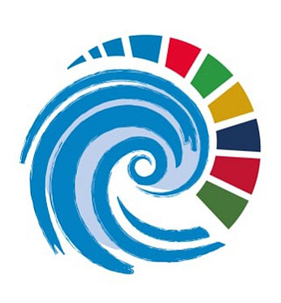
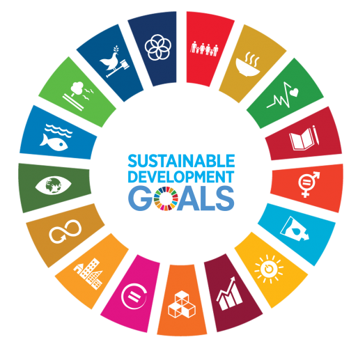

1 Introduction
To raise awareness of countries in the Western Indian Ocean (WIO) in monitoring their progress toward the achievement of the Sustainable Development Goals (SDGs), the FAO has partnered with WIOMSA to support capacity-building activities in collection, monitoring, and assessment of fisheries data for the WIO region. In general, these activities aim to strengthen the workflow from fisheries data collection to support the monitoring and reporting of SDG 14.4.1.
The prime goal of this initiative align with the the United Nations Decade of Ocean Science for Sustainable Development (2021-2030, Ocean Decade for short), which focus to support a new cooperative framework to ensure that global ocean science provides greater benefits for ocean ecosystems and wider society.

Decade provides a common framework to ensure that ocean science can fully support countries’ actions to sustainably manage the ocean and more particularly to achieve the 2030 Agenda for Sustainable Development – through the creation of a new foundation, across the science-policy interface, to strengthen the management of the ocean and coasts for the benefit of humanity.
A vast majority of the ocean remains unmapped, unobserved and unexplored. Our understanding of the ocean and its contribution to sustainability largely depends on our capacity to conduct effective ocean science - through research and sustained observations, supported by adequate infrastructures and investments.
This decade of the ocean comes down with a slogan the science we want for the ocean we need! But we flip it a little bit and should read the information we want for the ocean we need, why. Because we are at the time of precedented generation of data than ever before. Data generated from sensors to satellite is enormous.

In the WIO, small-scale fisheries dominate and are crucial for the livelihoods of coastal communities in the region, contributing to the twin imperatives of poverty reduction and economic development. However, these fisheries are dispersed, open-access in nature, multispecies and multi-gear, making their monitoring and determination of stock status for individual species incredibly challenging as data are insufficient for conventional stock assessment routines.
Efforts to determine stock status and provide evidence-based fisheries management advice are beset with problems, including insufficient or inadequate scientific data and expertise, which are compromised by economic and socio-political realities. For example, the regional state of the coast report for the western Indian Ocean (WIO) states that almost all countries in the region cannot adequately assess their marine resources and lack the financial capacity and technical expertise for effective management. Important impediments to fisheries management in the region relate to the following aspects:
- The lack of quality data available for analysis,
- Inadequate capacity for in-depth analysis of data, especially in monitoring and assessment of the state of fisheries and the likely effects of alternative management interventions, and
- Poor coordination between institutions and insufficient sharing of information on which to build good governance.
These have been highlighted as some of the impediments to meeting the targets of SDG 14.
Although the national fisheries institutes in the region do collect data on their fisheries, these data are often not detailed to an adequate granularity (e.g. regarding time, space, fleet or species levels), are not properly organized or linked, lack sufficient quality assurance and control, or are very difficult to retrieve for analysis. Additionally, there is often very limited technical capacity for managing, accessing and extracting data in a way that can be used for analysis.
Thus, even though data may exist, they often remain underutilized, strongly limiting the possibility of applying even data-limited approaches to stock monitoring. As such, analyses of stock status may be missing or be based on inappropriate metrics and methods, thereby hindering the formulation of relevant policies for the sector.
In its role as custodian agency of the SDG 14 indicators, FAO has a mandate to support countries to strengthen their capacities to collect, process, analyse and report data while ensuring that different national data sets are comparable and can be aggregated at sub-regional, regional and global levels to monitor the SDGs.
Initiatives conducted in the WIO
Two workshops have been undertaken in the WIO/East African region, first a project kick-off meeting of the Fishing Data East Africa (FIDEA) project (Dar es Salaam, Tanzania, 16-17 September 2019), focused on Tanzania-Mainland, Tanzania-Zanzibar and Mozambique, at which FAO agreed to partner with FIDEA to support a capacity development workshop in the East Africa region. This led to a mission by FAO staff to investigate the data infrastructure in Tanzania-Mainland, Tanzania-Zanzibar and Mozambique, as well as the SDG 14.4.1 reporting capacity development workshop in Zanzibar from 2-14 March 2020, which included 10 East African countries and WIO island nations.
The report of this second workshop recommended some key actions to support countries in improving the collection and use of data for monitoring the SDG 14.4 target. A common point in these recommendations is a greater need to provide long-term support for developing appropriate data management systems. This goes beyond collection to focus particularly on validation, organization, protection, retrieval and summary of the data, essential steps for allowing reliable estimation and reporting of the SDG14.4.1 indicator.
It has been stated many times that The collection of data is not an end in itself, but is essential for informed decision-making, and data can only be useful for supporting decision-making if they are properly stored, managed, and curated so that they have the quality necessary for providing meaningful and reliable advice. The report also recommended stronger collaboration between the SWIOFC regional process in monitoring the status of stocks and national processes in developing capacities for the monitoring of SDG14.4.1.
Objectives
The objective of this consultancy is to support development and refining of training tools related to fisheries data management workflow. This will involve working closely with the fisheries expert towards the development of training tools for enhancing stock monitoring status and national processes for SDG14.4.1 monitoring.
Scope of the work
In executing this consultancy, the Consultant will work closely with WIOMSA and FAO and the following tasks will be undertaken for guided data management, analysis and reporting for decision making and management of the fisheries resources in the region using Excel spreadsheet and R language tools. This will include development of the Excel and R tools that help to reproduce lecture material and tutorials.